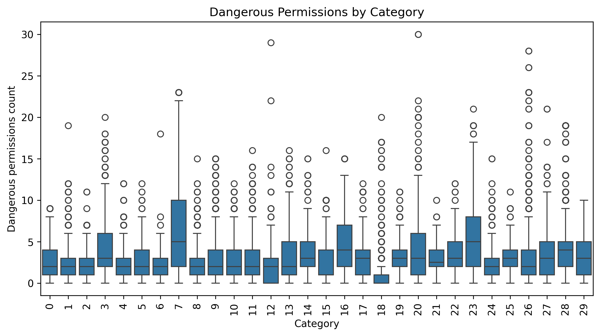
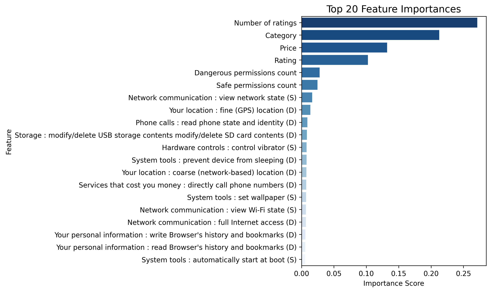
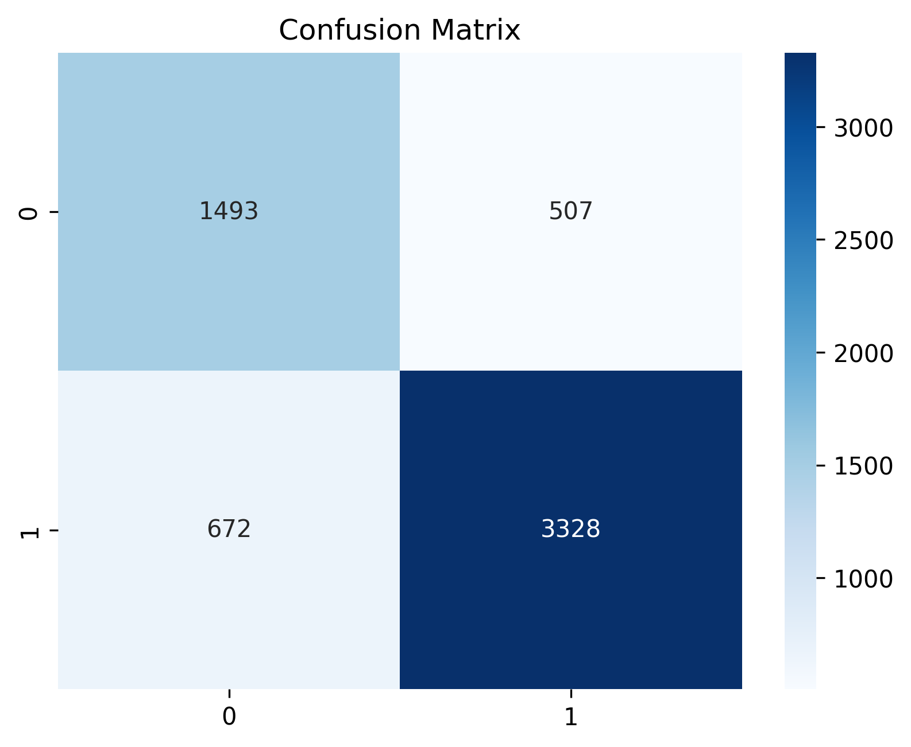

Summary
This project analyzed 29,999 Android applications to classify them into low-risk and high-risk privacy categories using their permissions, metadata, and popularity signals. Below are the key insights extracted from the EDA, hypothesis testing, and machine learning model results.
Apps with a greater number of dangerous permissions—such as access to phone state, contacts, SMS, precise location, or device storage—are significantly more likely to be classified as high-risk.
Evidence from EDA:

This supports the hypothesis that permissions directly reflect the app's potential to compromise user privacy.
Certain categories such as Communication, Tools, and Productivity inherently request more high-risk permissions due to their functionality. Meanwhile, categories like Games, Comics, and Books have the lowest average dangerous-permission count.
This insight shows that privacy risk is influenced not only by permissions but also by the type of app and its typical operational needs.
One of the most surprising findings is that Number of Ratings and App Rating are among the top predictors of privacy risk. Highly-rated and widely-installed apps tend to be more privacy-conscious, with fewer dangerous permissions.
This supports the hypothesis that users indirectly punish privacy-invasive apps through lower ratings and lower adoption.
The Random Forest classifier achieved around 80% accuracy, with stronger performance in identifying high-risk apps compared to low-risk ones.
High-risk patterns are more distinct (many dangerous permissions, low ratings), making them easier for the model to detect.
The correlation heatmap revealed very weak linear relationships between features. This explains why non-linear models like Random Forest perform well, while linear models would struggle.

Permission usage patterns are complex and sparse; therefore, tree-based models handle the structure significantly better.
Back to Home →